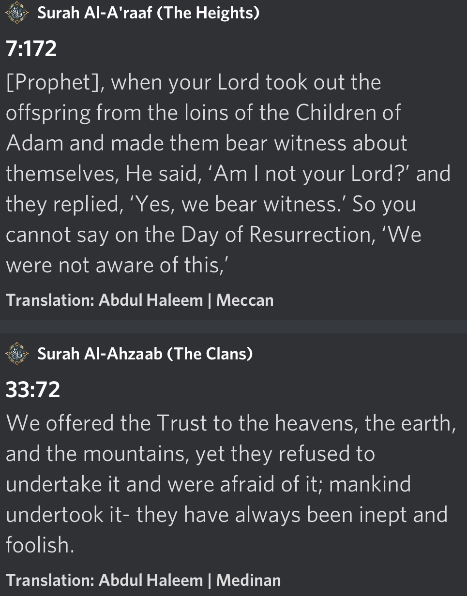
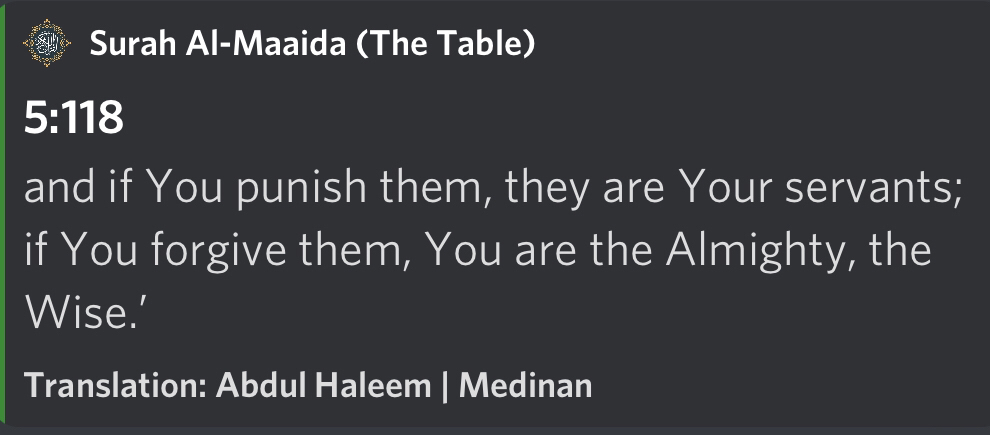
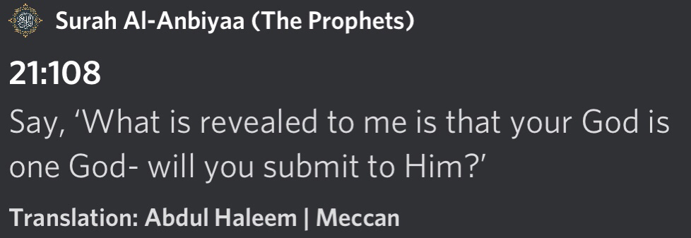
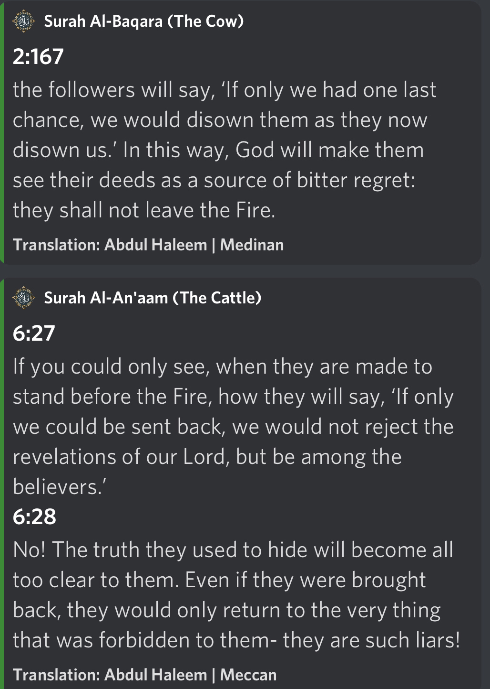
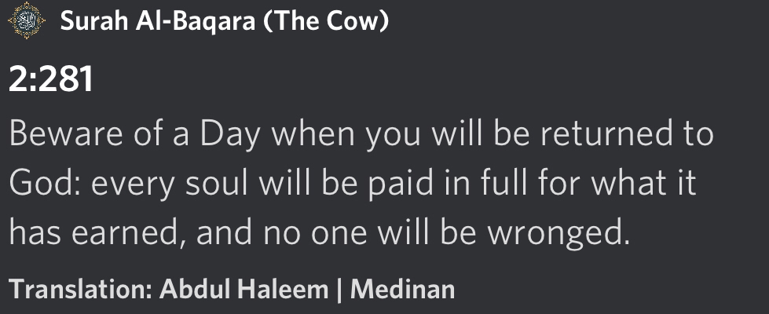

Introduction:
One of the popular arguments today that is made against those who believe in an eternal hell-fire is that it is unjust given its eternality.
There are three movements amongst those who profess such beliefs that hell is not eternal and the first of which are those who simply reject or doubt God exists (this category are the Liberal Atheists or Agnostics).
The second movement is the Deists, who believe God exists, but doubt any theology (i.e. religion) about Him.
The third movement is those who want to maintain their public identification as “believers” in a particular religion but have changed their understanding of God’s nature [i.e. theology] to be consistent with Liberal morality. This particular category belongs to people who believe in what’s known as Liberal Theology (theology that is consistent with Liberal morality). Muslims better know them as ‘modernists’.
However, we shall, if God wills, come to realize that these arguments against eternal hell and God’s justice, are themselves irrational (i.e. unjustified and inconsistent) and therefore wrong – followed by a demonstration of how the Islamic understanding of God’s justice and hell is consistent, justified, and – more importantly – just.
It is also important that every Muslim needs to educate themselves in these matters in a time where atheism/agnosticism is on a rise. And what I will look to share below are four brief highly effective arguments I've taken from various sources.
Now as we find that those amongst the three movements attack the concept of hellfire, which is, an idea derived from our religious sources. Every principle which is discussed in this channel is also to be derived from our scriptures, so if these people turn a blind eye to one side it is sheer hypocrisy.
Moving forward, before we begin, it is important to establish that God has the right and authority to define our purpose since we are His creation.
This purpose defines good and bad in our context, and it is this very purpose that acts as our moral criterion.
An example would be a vaccine that has the purpose of protecting against a virus and so it would be judged on that basis.
If it is found to be effective in doing so, it is a "good" vaccine. If it fails to meet this purpose it was designed for, it's a "bad" vaccine.
The same applies to us human beings:
Did you then think that We had created you without purpose, and that you would never be returned to Us?Exalted is Allah, the True King! There is no god ˹worthy of worship˺ except Him, the Lord of the Honourable Throne.
-Source: Qūr’ān 23:115-116
Now onto the four main arguments that establish that the justice of Allah (which includes hellfire) is completely perfect.
Argument #1
The first concept involves 'Mens Rea', a Latin phrase that means "guilty mind". This is a fundamental basis in most Western Legal Systems.
'Mens Rea' entails that fair judgment involves needing to establish that a criminal had bad intentions before they can be prosecuted (although not for all crimes in the West) and this would also mean that rightful justice essentially depends on if the person has understood the gravity of the crime they have committed (to an extent).
Put simply, it would be unjust to punish an individual without warning them, about the crime, along with its punishment.
Now, we find in the Quran that the disbelievers will be explicitly asked if messengers had been sent to their people:
Those who disbelieved will be driven to Hell in ˹successive˺ groups. When they arrive there, its gates will be opened and its keepers will ask them: “Did messengers not come to you from among yourselves, reciting to you the revelations of your Lord and warning you of the coming of this Day of yours?” The disbelievers will cry, “Yes ˹indeed˺! But the decree of torment has come to pass against the disbelievers.” It will be said to them, “Enter the gates of Hell, to stay there forever.” What an evil home for the arrogant!
-Source: Quran 39:71-72
In light of the above, this would make Allah :SWT: EXTREMELY just.
For no one would be punished in Hellfire without being reminded, and forewarned (or having access to forewarning), and given chances with the truth.
As for humans who had no Messengers come directly to them, they would’ve needed to have searched out the purpose of life and have some awareness of morals (that were inherited or influenced from a past messenger) within their society, upon which to be judged by.
If those insisting on denying the idea of an eternal hell argue that willfully ignorant people should be excused judgment, they should be reminded that even in Western Legal Systems which they adore, they have the principle ‘Ignorantia Juris non-excusat’ [ignorance of the law does not excuse].
So when Allah forewarns prior to punishment, we see His justice is infinitely more perfect, clearly, in comparison to Western Legal Systems.
Did you then think that We had created you without purpose, and that you would never be returned to Us?Exalted is Allah, the True King! There is no god ˹worthy of worship˺ except Him, the Lord of the Honourable Throne.
-Source: Qūr’ān 23:115-116
Argument #2
Every single soul agreed to undertake the trial of fulfilling their purpose autonomously and to therefore to fail in doing so would be a breach of covenant.

With this in mind, no one has the excuse that they did not consent to this arrangement, as we all did out of our own free will.
Therefore, it is not Allah :SWT: that is unjust. It is us. Against ourselves.
Argument #3
Even if the argument is made that humans did not consent to this arrangement (which was debunked above) the argument holds zero weight.
At the end of the day, Allah is al-Maalik (the ultimate sovereign). He does NOT need us to consent to anything. We are the slaves of Allah and are owned by Him, giving Him the complete right of disposal over us.
And no. We do not own ourselves. In fact, we are not independent of Allah. Every moment of our existence depends on him sustaining us. Dissociating from Allah is an impossibility.
Even the most liberal atheist understands when you're living under someone's roof, and are dependent upon them, you follow their rules, as an unwritten contract.
This ownership of us by Allah was mentioned by Jesus :AS: (when he was discussing the fate of his nation) as stated in the Quran:

Argument #4
The most crucial factor that's disregarded in objections to hellfire, is Allah's mercy, given our condition to be tempted to sin.
This includes Allah :SWT: determining that a single good deed would weigh 10x the weight of evil.

Final comments:
The arguments above are taken from the following article by Abdullah al-Andalusi. I highly recommend you read his entire essay which goes into far more depth and covers far more aspects:
https://abdullahalandalusi.com/2018/05/26/is-hell-just-a-response-to-secular-liberals-and-atheists/
Argument #5
Another argument to work off on is based on verses in the Quran as follows. The verses are 2:167 and 6:27-28 that go as follow:

Before sharing the above verses, one should ask those who deny eternal hell is if they find the idea of a person being punished for only the amount of time they spent rejecting Islam during their lifetime as justice.
Meaning, if someone has lived 70 years as a stubborn atheist during this life, if these people, in their faulty idea of justice, think God should only punish them for only 70 years in the afterlife.
If they say yes to the above, in that they agree that a person should only be punished for the amount of time they spent rejecting God.
This is when you share the above verses and point out that those who will spend eternity in hell will be rejecting truth as a part of who they are forever and that if these same rejectors were given freedom again, they would revert back to being themselves and turn back to rejecting God always. This is justice.
Such people, like any terrible criminal when caught, will pretend they would change but if let out, will continue to do the same crime again.
A life sentence is a normal punishment given for such people in western societies from judges who are not all-knowing, thus, where we have an all-knowing being given out eternal life sentences to those who deserve it, there is perfect justice. And if someone says God should just force them to turn into true believers and not let them be themselves, this would be an injustice.
And we know in the Quran, God states:

https://m.youtube.com/watch?v=1ve1dtkdybA
https://m.youtube.com/watch?v=GXvbQH4gXS8